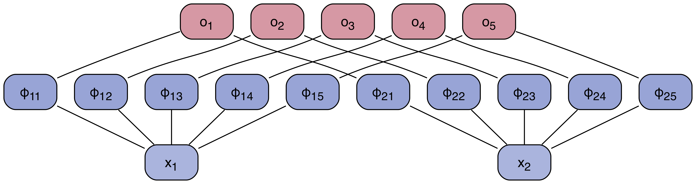

Intelligent Vision Systems
Group Meeting
2024/07/03 Winterthur
Group Meeting
2024/07/03 Winterthur
SKAO Data Challenge 3 (SDC3)
- Epoch of Reionization, i.e. when things started to shine
- the Universe transitions from neural to ionized state
- observational signal \(\delta T_b(\theta, z)\) (differential brightness)
- depends on the redshift-evolution of the neutral hydrogen fraction \(\langle x_{\mathrm{HI}} \rangle \in \left[0, 1\right]\)

SDC3 setup
- Input dataset: 3D tomographic data simulated with two codes (different approaches)
- Observational setups:
- Realistic scenario: 21-cm LC + systematic noise + residual foreground ⟶ PS
- Ideal scenario: 21-cm LC + systematic noise ⟶ PS

SEarCH team (Swiss-Swedish collaboration)

- reverse engineered the previous challenge
- simulation data available, challenge data not yet released
- Solution strategies:
- MCMC ⟶ already seems to work quite well
- Simulation-based inference (SBI) ⟶ already works amazingly well
- Emulation ⟶ too perfect?
- direct inference with NNs: MLP + KAN ⟶ MLP work just as well as SBI; KAN TBD
Discussion time: Kolmogorov-Arnold Networks

Kolmogorov-Arnold representation
- If \(f\) is a multivariate continuous function on a bounded domain, then it can be written as a finite composition of continuous functions of a single variable.
- More specifically, for a smooth \(f : \left[0, 1\right]^n \longrightarrow \mathbb{R}\)
\begin{equation}
f(x) = f(x_1, ..., x_n) = \sum_{q=1}^{2n+1} \Phi_q(\sum_{p=1}^{n} \phi_{q,p}(x_p))
\end{equation}
Previous work
- this has been studied before
- most stuck with networks of depth 2 and width 2n+1
- this paper goes to arbitrary depth and width
Kolmogorov-Arnold layers
- Idea:
- matrix \(\phi_{qp}\) are activation functions acting on the features \(x_q\)
- sum over rows

Comparison to MLPs

What is \(\phi\)?
- in principle any bounded, differentiable function
- polynomials ⟶ explode for small changes in x
- authors instead propose: B-splines
- constructed by means of Cox–de Boor recursion
\begin{align}
B_{i,0}(t) &= 1 \quad\mathrm{if}\quad t_i \leq t \lt t_{i+1} \quad \mathrm{and} \quad t_{i} < t_{i+1} \\
B_{i,0}(t) &= 0 \quad\mathrm{otherwise}
\end{align}
\begin{equation}
B_{i,p}(t) = \frac{t - t_i}{t_{p+1} - t_i} B_{i,p-1}(t) + \frac{t_{i+p+1} - t}{t_{i+p+1} - t_{i+1}} B_{i+1,p-1}(t)
\end{equation}
Interpretability
- Regularization
- Visualization
- Pruning
- Symbolification

Advantages
- Accuracy in low dimensions
- parameter efficient at low dimensions
- grid extension
- Catastrophic (Un)Forgetting
- KANs are good at continual learning
- due to local control in splines
- Expressivity
- internal and external degrees of freedom
- more expressive than MLPs
- Symbolic Regression
- KAN can be symbolic solvers and interpretable
- through sparsification and pruning
Disadvantages
- GPU-inefficient
- due to non-batchability
- Scalability
- untested at higher dimensions
- Untested in real-world scenarios